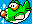
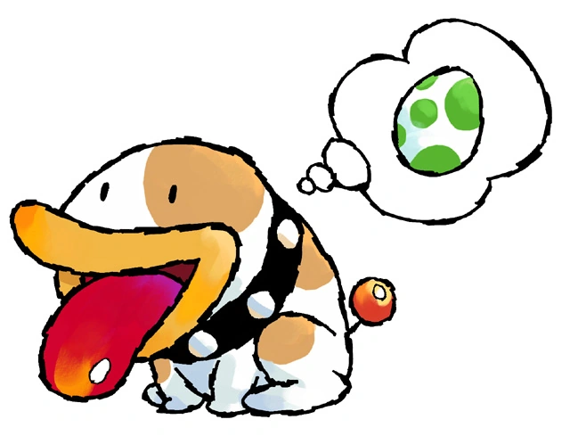

Yoshi Island

Nasce um clássico Foram quatro anos de desenvolvimento até que o novo Mario ficasse pronto depois de um longo período de experimentações técnicas.
O cenário não era mais o mesmo desde a primeira aparição do italiano saltador no SNES, já que os primeiros jogos em 3D começavam a surgir e os sprites
eram ridicularizados frente à aparente superioridade dos modernos e “realistas” polígonos. Porém, nada disso abalou a qualidade desse game que já nascia clássico.
Desenvolvido pela Nintendo EAD, com nomes como Shigeru Miyamoto (produtor), Kōji Kondō (trilha sonora) e Takashi Tezuka (Diretor) no time de criação,
Super Mario World 2 chegava às prateleiras em 5 de agosto de 1995 no Japão e dois meses depois nos Estados Unidos.
O jogo começa com uma cegonha carregando dois bebês (Mario e
Luigi) sobre o oceano tranquilo em direção ao Brooklyn. Tudo parece bem, no entanto, o perigo se
aproxima quando Kamek, um Koopa com poderes mágicos, rapta um dos bebês (Luigi), pois previra que
eles
causariam incômodo para seu mestre, Baby Bowser, no futuro. Ele tenta raptar os dois bebês, mas
consegue
pegar apenas um, deixando o outro cair no oceano. Kamek, furioso por ter perdido o outro bebê, manda
seus servos, os Toadies, o procurarem.
O outro bebê, que havia aparentemente caído no oceano, caiu, na verdade, em uma ilha: a Yoshi's
Island
(Ilha do Yoshi). Ele caiu bem em cima de um Yoshi, que encontra um mapa junto com o bebê e decide
ajudá-lo a achar seu irmão Luigi. Cientes da catástrofe, toda a tribo de dinossauros Yoshis também
se
juntam à batalha. Juntos, estes Yoshis por sua vez transportam Mario pelo terreno perigoso e, contra
todas as probabilidades, resgatar Baby Luigi, e derrotar Kamek e Baby Bowser. Os vilões espalham
várias
criaturas pela ilha, que são os chefes do jogo. Agora, o personagem jogável é Yoshi e deve também
impedir que Baby Mario seja capturado pelos Toadies, passando por seis mundos e 54 fases
diferentes.
Poochy
Poochy (ポチ) é um personagem canino que participa de várias séries dos jogos de Yoshi. Ele ajuda
Yoshi em
sua aventura com Baby Mario servindo de "isolador" de espinhos e lava, uma vez que pode andar sobre
os
mesmos. Se o jogador encontrar algum obstáculo (como uma parede), Poochy pulará automaticamente.

Desenvolvimento
Yoshi's Island foi desenvolvido pela Nintendo EAD e publicado pela Nintendo para o Super Nintendo
Entertainment System.
De acordo com Shigeru Miyamoto, que atuou como um produtor, Yoshi's Island estava em desenvolvimento há
quatro anos,
o que deixou a equipe adicionar "muitos truques de mágica".
Outro detalhe interessante é que segundo Miyamoto, o resultado final do jogo inseriu todas as ideias
projetadas
desde o inicio do projeto.
É comum em muitos jogos os criadores citarem ideias e mecânicas cortadas no desenvolvimento do jogo a
partir
de restrições de hardware, limitação de tempo e etc, mas esse não foi o caso de Yoshi's Island, quando
perguntado Miyamoto respondeu, "Foi surpreente, uma vez que o desenvolvimento estava realmente em
andamento,
houve poucas ideias que tivemos de abandonar, sabíamos que este seria o último jogo de Mario que
faríamos
para o Super Famicom, então queríamos sair com um estrondo e incluir tudo o que podíamos".
O jogo foi lançado pela primeira vez no Japão em Agosto de 1995, e dois meses depois na América do Norte
e Europa.
Recepção
Yoshi's Island foi recebido com "instantânea" e "aclamação universal", de acordo com uma retrospectiva
da
IGN e da revisão agregadora da Metacritic, respectivamente. Nintendo Power também disse que o jogo foi
"um dos grandes jogos mais bonitos já feitos". A Next Generation também estava muito impressionada com o
"tamanho e jogabilidade" do jogo. Nintendo Power e Nintendo Life também opinaram que Baby Mario chorando
soa
irritante. A revisão da Allgame diz que "Yoshi's Island mostra que videogames pode ser de fato uma forma
de
arte, é um lindo jogo, envolvente, cheio de gráficos exuberantes, grande controle e jogabilidade
inovadora
que empurram o Super NES para os seus limites extremos".